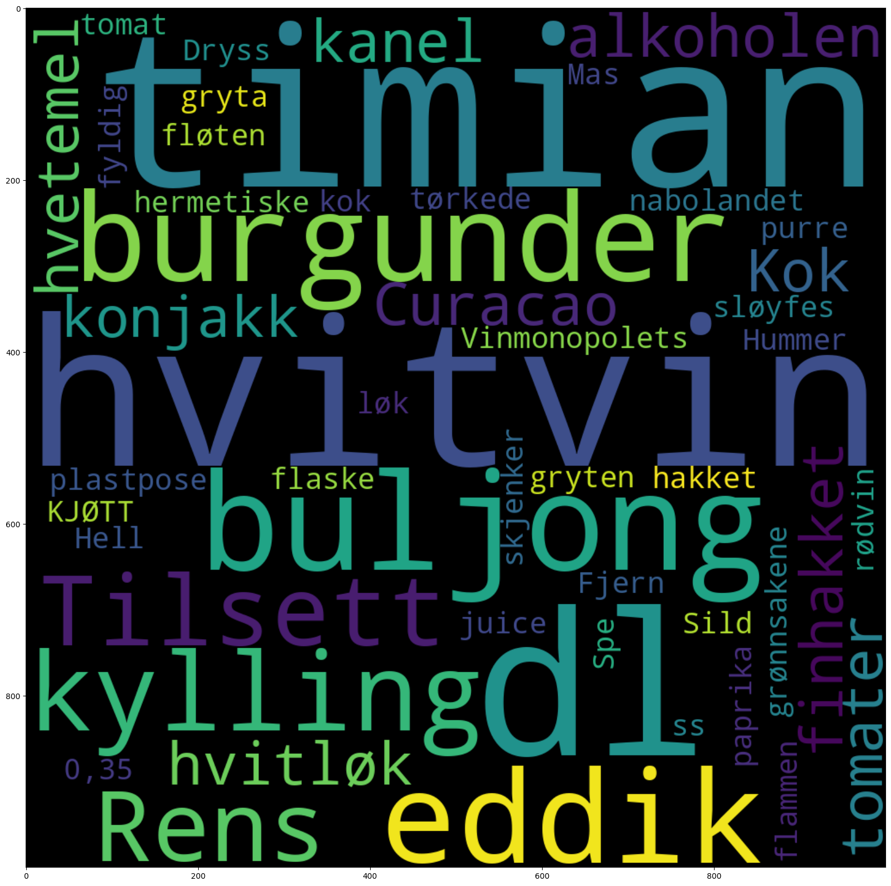
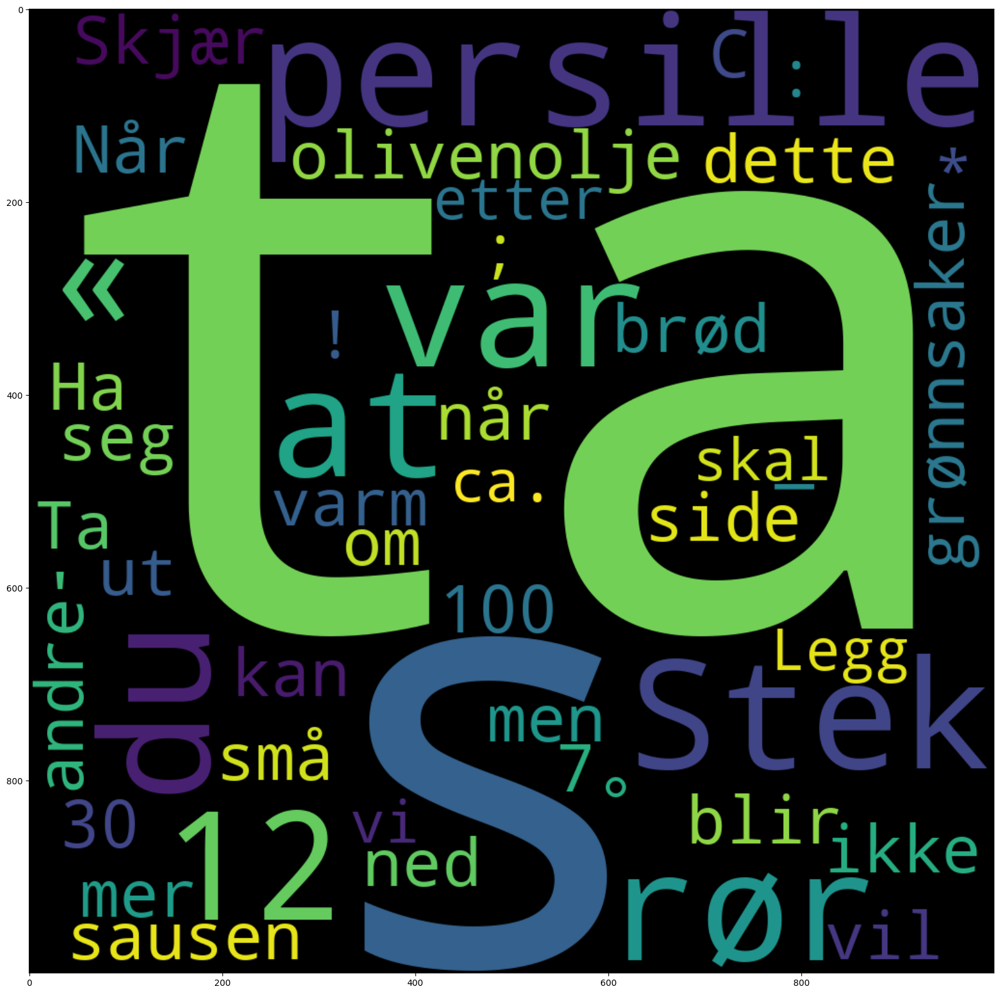

import dhlab as dh
from dhlab.api.dhlab_api import totals
from dhlab import nbtext as nb
# korpus med inntil 50 bøker fra dewey 641 (mat og drikke) utgitt mellom 1960 og 2020
korpus = dh.Corpus(ddk="641*", doctype="digibok", limit=50)
korpus.corpus.head(2)
| dhlabid | urn | title | authors | oaiid | sesamid | isbn10 | city | timestamp | year | publisher | langs | subjects | ddc | genres | literaryform | doctype | ocr_creator | ocr_timestamp | |
|---|---|---|---|---|---|---|---|---|---|---|---|---|---|---|---|---|---|---|---|
| 0 | 100433299 | URN:NBN:no-nb_digibok_2021011907576 | Magevennlig mat : lavFODMAP : kokeboka for deg... | Edin , Julia Døhlen / Døhlen , Espen Edin | oai:nb.bibsys.no:991509321114702202 | 88fb22d487fa4cdf813f0393a02123bb | [Oslo] | 20150101 | 2015 | Cappelen Damm | nob | matlaging / mageproblemer / fodmap | 641.5631 / 641.563 | Faglitteratur | digibok | nb | 20060101 | ||
| 1 | 100501604 | URN:NBN:no-nb_digibok_2007112201099 | Matglede | Kielland , Ruth Marcussen | oai:nb.bibsys.no:999106591254702202 | 103dfbfebcd99698141cbdef29ad0341 | 8205201978 / 8252520561 | [Oslo] | 19910101 | 1991 | Gyldendal | nob | kokebøker | 641.5 | Faglitteratur | digibok | nb | 20060101 |
collword = 'rødvin'
# Vi utfører en konkordans for å sjekke at korpuset virker.
# dh.Concordance(corpus=korpus, query="sei").show()
korpus.conc("sei").show()
| link | concordance | |
|---|---|---|
| 2 | URN:NBN:no-nb_digibok_2007112201099 | IV2 kg pale ( sei ) IV2 l vann |
| 84 | URN:NBN:no-nb_digibok_2017010648124 | bovine , and porcine proteinases . J . Sei . Food . Agric . press ) . |
| 43 | URN:NBN:no-nb_digibok_2011030803010 | ... klare å komme langt inn , så både her og i visse saltvannsstrømmer kan større sei fiskes fra land . |
| 20 | URN:NBN:no-nb_digibok_2015042348028 | ... gjedde , 2 løk abbor , flyndre , torsk eller sei abbor , flyndre , makrell , torsk eller 2... |
| 86 | URN:NBN:no-nb_digibok_2021021007602 | 200 g fersk eller frossen filet av sei eller torsk 4 poteter |
| 68 | URN:NBN:no-nb_pliktmonografi_000027143 | ... 400 g filet av f.eks torsk eller sei Fres grønnsaker et par minutter i smør i en stor kjele mens... |
| 70 | URN:NBN:no-nb_digibok_2011030803010 | Sei i rømmesaus |
| 16 | URN:NBN:no-nb_digibok_2017082348021 | Stell og steik sei som forklart ovanfor . Server seibiff med steikt lauk . |
| 29 | URN:NBN:no-nb_digibok_2017010648124 | diarrhea in calves led rnilk replacer . Can . J . Anim . Sei . 49 : 305 , 1969. |
| 11 | URN:NBN:no-nb_digibok_2011030803010 | Oppskrifter på sei |
# Vi legger inn variablen collword som søkeord, med 5 ord før og etter.
# Antall ord før og etter kan endres etter konteksten man vil undersøke.
# Collword er lagt som variabel i cella over, slik at det er lett å gjenbruke notebooken for ulike søkeord
coll = korpus.coll(words=collword, after=5, before=5, samplesize=1000)
# For å vise topp `n` treff bruke .show().head(n)
coll.show().head(5)
| counts | |
|---|---|
| dl | 122 |
| , | 108 |
| . | 106 |
| og | 92 |
| 1 | 89 |
coll.coll.sort_values(by="counts", ascending=False).head(10)
| counts | |
|---|---|
| dl | 122 |
| , | 108 |
| . | 106 |
| og | 92 |
| 1 | 89 |
| 2 | 87 |
| i | 63 |
| en | 43 |
| med | 33 |
| ss | 28 |
tot = totals(50000)
tot.head()
| freq | |
|---|---|
| . | 7655423257 |
| , | 5052171514 |
| i | 2531262027 |
| og | 2520268056 |
| - | 1314451583 |
# dh.Counts teller tokens i hver tekst i korpus
dokumenter_aggregert = korpus.count(words=None)
# Summerer slik at vi får totalt tokens for korpus
korpus_agg = dokumenter_aggregert.counts.sum(axis=1)
korpus_agg = nb.frame_sort(nb.frame(korpus_agg))
korpus_agg.head(10)
| 0 | |
|---|---|
| . | 130687 |
| , | 99945 |
| og | 82952 |
| i | 64064 |
| med | 35683 |
| til | 30498 |
| er | 30239 |
| en | 25947 |
| av | 25087 |
| på | 24693 |
coll.coll.sort_values(by="counts", ascending=False)
| counts | |
|---|---|
| dl | 122 |
| , | 108 |
| . | 106 |
| og | 92 |
| 1 | 89 |
| ... | ... |
| hvitløkkløfter | 1 |
| hvitløksfedd | 1 |
| hvitpepperkorn | 1 |
| Mosten | 1 |
| ! | 1 |
862 rows × 1 columns
coll_df = coll.coll.copy()
coll_df.sort_values(by="counts", ascending=False)
| counts | |
|---|---|
| dl | 122 |
| , | 108 |
| . | 106 |
| og | 92 |
| 1 | 89 |
| ... | ... |
| hvitløkkløfter | 1 |
| hvitløksfedd | 1 |
| hvitpepperkorn | 1 |
| Mosten | 1 |
| ! | 1 |
862 rows × 1 columns
nb.normalize_corpus_dataframe(korpus_agg)
nb.normalize_corpus_dataframe(tot)
nb.normalize_corpus_dataframe(coll_df)
True
korpus_agg.head()
| 0 | |
|---|---|
| . | 0.054504 |
| , | 0.041683 |
| og | 0.034596 |
| i | 0.026718 |
| med | 0.014882 |
tot.head()
| freq | |
|---|---|
| . | 0.070908 |
| , | 0.046796 |
| i | 0.023446 |
| og | 0.023344 |
| - | 0.012175 |
coll.coll.head()
| counts | |
|---|---|
| ! | 1 |
| % | 3 |
| ' | 2 |
| ( | 18 |
| ) | 16 |
coll_assoc = (coll_df.counts**1.0/tot.freq).sort_values(ascending=False).to_frame()
coll_assoc.head(20)
| 0 | |
|---|---|
| timian | 3203.673338 |
| hvitvin | 2484.872240 |
| dl | 2068.115939 |
| buljong | 1893.517473 |
| eddik | 1012.163391 |
| burgunder | 909.053282 |
| kylling | 723.024847 |
| Tilsett | 721.455472 |
| Rens | 710.985229 |
| alkoholen | 695.823191 |
| hvitløk | 684.052590 |
| finhakket | 677.826767 |
| kanel | 592.364523 |
| hvetemel | 563.964309 |
| Kok | 524.740942 |
| Curacao | 492.278000 |
| tomater | 465.204114 |
| konjakk | 432.512703 |
| Vinmonopolets | 424.149894 |
| Hell | 393.080611 |
korpus_agg
| 0 | |
|---|---|
| . | 0.054504 |
| , | 0.041683 |
| og | 0.034596 |
| i | 0.026718 |
| med | 0.014882 |
| ... | ... |
| eggnudlene | 0.0 |
| storfelever | 0.0 |
| gagnlegare | 0.0 |
| cateringvirksomheter | 0.0 |
| kaldeste | 0.0 |
124014 rows × 1 columns
coll_assoc_korp = (coll_df.counts**1.2/korpus_agg.iloc[:, 0]).sort_values().to_frame()
coll_assoc_korp.head(20)
| 0 | |
|---|---|
| ca. | 0.031865 |
| skal | 0.041399 |
| vi | 0.052083 |
| Legg | 0.055557 |
| * | 0.058861 |
| etter | 0.061036 |
| : | 0.075639 |
| ° | 0.078831 |
| om | 0.080771 |
| vil | 0.085918 |
| C | 0.085956 |
| ut | 0.086047 |
| mer | 0.086682 |
| andre | 0.08959 |
| men | 0.093036 |
| side | 0.093321 |
| 30 | 0.094773 |
| ! | 0.096845 |
| ikke | 0.097388 |
| små | 0.098409 |
# Her viser vi de 50 viktigste ordene som er assosiert med rødvin i korpuset vårt, målt mot alle bøker i nb.no
nb.cloud(coll_assoc.head(50)/coll_assoc.sum())

# Her viser vi de 50 viktigste ordene som er assosiert med rødvin, målt mot hele "Drikkevare"-korpuset
nb.cloud(coll_assoc_korp.head(50)/coll_assoc_korp.sum())
